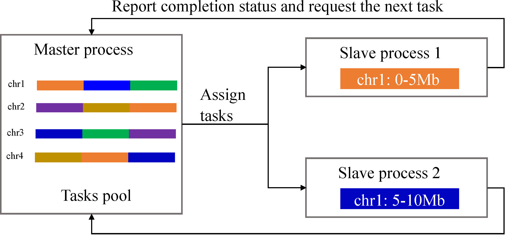
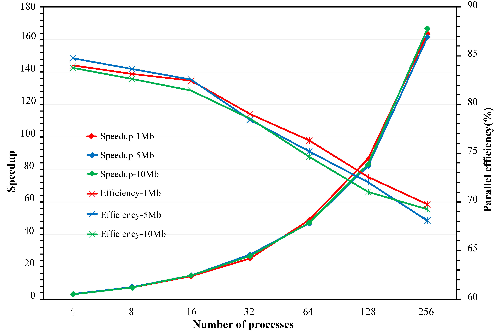

Publication
ParaPindel: a scalable coordinated parallel detection framework for human genome-wide structural variation
Abstract
Detecting the existence of variation from massive human genome data, and determining the breakpoints and types of variations is essential for analyzing structural variation. Pindel, an accurate detection tool based on pattern growth approach, is commonly used for discovering indels and other types of structural variations from next-generation sequencing data. The explosive growth of sequencing data poses new challenges to current implementation of Pindel.
Here, we proposed ParaPindel, an optimized version of Pindel that utilizes distributed multiprocess, for efficient large-scale detection of structural variation for human whole-genome sequencing data. ParaPindel divides the chromosome into multiple small windows with a fixed-length window size, so as to realize the parallel detection between different windows and different chromosomes. A crosswindow with a smaller length is introduced to cope with possible structural variations at the edge of the window.
The experimental results show that ParaPindel shortens the time to detect an individual’s genome-wide structural variation from 186 hours to 33 minutes under the premise that the detection results are basically consistent. Employing 256 processes on 128 nodes on the TH-IHN supercomputer, the speedup ratio has reached 163 times, and the parallel efficiency has reached 69.74%.




Citation
Yang Y, Wang X, Xu Y, et al. ParaPindel: a scalable coordinated parallel detection framework for human genome-wide structural variation[C]//2021 IEEE International Conference on Bioinformatics and Biomedicine (BIBM). IEEE, 2021: 574-579.